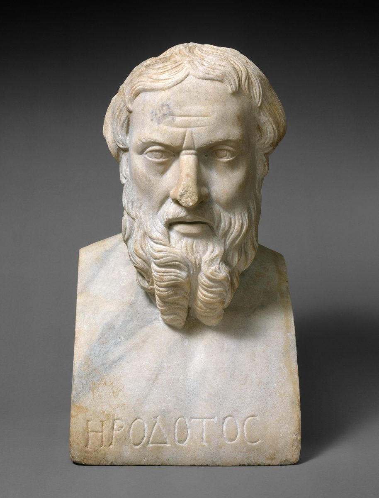

Unit 5 · Historical investigation · Lesson 10
The shape of a report: introduction, headings and plan
How is a research report built, and what must its introduction do?
Year 11 Ancient History · Present with → or space · Read on a phone with R

Connect · 3 minutes · books closed · everyone writes · press K for the timer
From last lesson: one claim, one hedge
Write a claim about your topic with exactly one hedge.
Then swap with a partner: is it one hedge, matched to the evidence?
One claim about your topic, and one hedge from the scale that your evidence earns: usually the middle (probably, suggests, is likely to), lower if it is thin, higher if it is strong.
Not none (proves from one source) and not stacked (may possibly suggest). One hedge per claim is a rule of thumb; a degree of extent (largely, partly) is not a hedge. Your Writing toolkit (booklet pages 3–4): the modality scale.
Learning intentions and success criteria · 2 minutes
Today’s goals
- understand the structure of a historical research report
- plan a report and write its introduction
- name the parts of a report and what each does
- turn my sub-questions into section headings with a claim and sources for each
- write an introduction with context, the question and a thesis that previews the argument
Syllabus outcomes: AH-11-07 communicates historical understanding, applying historical knowledge, terms and concepts · AH-11-08 plans and conducts historical investigations and presents conclusions, using evidence from a range of sources. Life Skills: AH-LS-12 participates in a historical investigation · AH-LS-11 communicates information about the past using historical terms and concepts.
Note-making · the routine for the whole course
How to structure your notes
questions and key terms, written after
short phrases, arrows (→ leads to), abbreviations (c. = about; BCE = Before the Common Era)
- 1A new lesson, a new pageA cue column about a quarter of the page wide; title and date at the top; room for a summary at the bottom.
- 2Listen and look, then writeDon’t copy while a slide is being explained. Phrases, not sentences.
- 3Write your own notes at the ✎ checkpointThen compare with the model notes, one row at a time. Add what you missed in a second colour.
- 4Write the cue questions afterwardsUse exam verbs: describe, explain, assess. To revise, cover your notes and answer the cues.
- 5Your plan sheet is separateNotes hold what you learn about report structure; the plan sheet holds your own report’s headings, claims and sources. One checkpoint today: the shape of a report.
Key vocabulary · add to the unit word wall
Words for a report
| Research terms | Meaning |
|---|---|
| Report | A structured written answer to an investigation question, with headed sections and a reference list. |
| Sub-question | A smaller question that helps answer the main one; it becomes a section of the report. |
| Reference list | The full details of every source cited, in alphabetical order by author. |
| Writing terms | Meaning |
| Hypothesis | A provisional, testable answer to your question; research may confirm, modify or reject it. |
| Writing terms | Meaning |
|---|---|
| Thesis | Your answer to the question, with a degree; the confirmed or revised hypothesis. |
| Added today | Meaning |
| Introduction | The opening of a report: the context, the question and the thesis. |
| Roadmap sentence | A sentence that announces what the writing will do, such as ‘This report will discuss …’, instead of arguing it. A thesis does the job better, so leave the announcement out. |
| Preview | Telling the reader your answer and its main reasons in the words of the argument, so they know where the report is going. |
1 · The shape of a report · I do — the four parts and what each does · then cold call
A report is an argument with a shape
| Part | What it does | Where it comes from |
|---|---|---|
| Introduction | Gives the context, asks the question and states a thesis: your answer, with a degree, previewing the argument. | Your hypothesis, as your research has changed it. |
| Sections, each with a heading | Each heading states a claim. The section proves it with at least two sources, cited and in your own words. | Your sub-questions. |
| Conclusion | Answers the question: the thesis refined, with its limits. No new evidence. | The whole argument (Lesson 13). |
| Reference list | Lists every source you cited, in alphabetical order, in author–date style. | Your annotated source list (Lessons 4 to 6). |
How is a report different from an essay?
It has headings, and it states its question and scope openly. It is still an argument: it answers the question with a thesis and proves it with evidence, so a reader can find each claim and check its sources.
1 · The shape of a report · I do — the class model report, read and labelled (1 of 3)
The class model report: introduction and section 1
How far does the evidence support Herodotus’s account of who built the Great Pyramid?
Introduction
Writing more than 2,000 years after King Khufu, the Greek historian Herodotus reported that a whole people was made to work on the king’s pyramid and that Khufu “brought the people to utter misery” (Herodotus 2.124). How far does the evidence support his account? The excavated builders’ town, its food remains and Merer’s papyri support Herodotus only in part: they point to crews that the crown organised and fed, probably as a duty owed to the king, but not to a people brought to “utter misery”, although the town may belong mainly to later kings.
1 · Herodotus reports what Egyptians told him
Herodotus begins with “They said”, so his account passes on what Egyptians told him about the king (Herodotus 2.124). He also depended on an interpreter to read him the writing on the pyramid (Herodotus 2.125). He says the work was done in gangs of 100,000 men, but the archaeologist Mark Lehner points out that this figure is only what Herodotus says he was told (Lehner 1997). The account is therefore a report of other people’s claims, written more than 2,000 years after the reign, and it must be tested against evidence from the sites.
Context: who, when and what is claimed, packed into noun groups
The question, as the investigation asks it
Thesis: a degree (only in part), its reasons and its limit. It previews the sections, with no announcement
Heading: the answer to sub-question 1, not just a topic
A second source, attributed and cited where used
1 · The shape of a report · I do — the class model report, read and labelled (2 of 3)
The class model report: sections 2 and 3
2 · The builders’ town points to crews that the crown organised and fed
Ancient Egypt Research Associates (AERA) (n.d.), the team that has excavated the town, describe a settlement that the crown created for the work, with bakeries, kitchens and royal grain silos. The Ministry of Tourism and Antiquities (Egypt) (n.d.) reads the large quantity of animal bones from the town as a sign that the state kept its workers healthy, which fits Herodotus’s report that an inscription recorded what was spent on the workmen’s radishes, onions and garlic (Herodotus 2.125). The Ministry also reports that most of the people buried in the town’s cemetery show signs of heavy physical work and many had broken bones, though most of these had healed well, so the work was hard even if injuries were treated (Ministry of Tourism and Antiquities (Egypt) n.d.). The town’s date is a limit: AERA links it to Menkaure, Khafre and probably Khufu (Ancient Egypt Research Associates n.d.), but the Ministry places its workers in the reigns of Khafre and Menkaure, with an older settlement beneath that “may date to Khufu’s reign” (Ministry of Tourism and Antiquities (Egypt) n.d.).
3 · The crews worked in organised groups, probably as a duty owed to the king
Papyri found at Wadi al-Jarf, from late in Khufu’s reign, include accounts of regular food deliveries and the daily logbook of the inspector Merer, which records his men carrying limestone from the Tura quarries to Giza (Tallet and Marouard 2014). Weiss (2022), reporting Tallet’s reading, describes Merer’s unit, or phyle, as about 40 men, one of four in a larger team, so the crews seem to have worked in organised groups. Herodotus’s gangs that served for three months at a time (Herodotus 2.124) fit service in turns, and Lehner judges that “it seems that everybody owed a labor tax”, although “it may not have been entirely coercion” (Lehner 1997). The service was therefore probably a duty owed to the king, but not necessarily a harsh one: Weiss (2022) notes that it is hard to say whether the quarry workers and stone-lifters were treated as well as Merer’s boatmen.
Heading 2: the answer to sub-question 2, with a hedge (points to)
Two sources set against each other, each cited, to name a limit inside the section
Heading 3: the answer to sub-question 3. Probably is the thesis’s own hedge, carried into the heading
A hedged reading, with its limit: fit, Lehner’s it seems, one probably of my own, then what Weiss says cannot be known
1 · The shape of a report · I do — the class model report, read and labelled (3 of 3) · then cold call
The class model report: conclusion and reference list
Conclusion
Herodotus’s account is therefore supported only in part. The evidence suggests that the crown organised and fed its crews, that their service was a duty owed to the king, and that the work was hard, but it does not show a people brought to “utter misery”. The judgement has limits: the town may belong mainly to later kings, Merer’s papyri describe one team, and on present evidence no worker has left a description of how the service felt, only an inspector’s work log.
Reference list
- Ancient Egypt Research Associates (n.d.) ‘The Lost City of the Pyramids (Heit el-Ghurab)’, AERA, viewed [date], https://aeraweb.org/projects/lost-city/
- Herodotus (1920) The Histories, trans. A. D. Godley, as revised by the Perseus Digital Library, viewed [date], https://www.perseus.tufts.edu/hopper/text?doc=Perseus:text:1999.01.0126
- Lehner, M. (1997) ‘Interview with Mark Lehner’, in ‘Who Built the Pyramids?’, NOVA Online, 4 February, viewed [date], https://www.pbs.org/wgbh/nova/article/who-built-the-pyramids/
- Ministry of Tourism and Antiquities (Egypt) (n.d.) ‘Workers’ Town and Cemetery’, Discover Egypt’s Monuments, viewed [date], https://egymonuments.gov.eg/en/monuments/workers-town-and-cemetery/
- Tallet, P. and Marouard, G. (2014) ‘The Harbor of Khufu on the Red Sea Coast at Wadi al-Jarf, Egypt’, Near Eastern Archaeology, 77(1), pp. 4–14. https://doi.org/10.5615/neareastarch.77.1.0004
- Weiss, D. (2022) ‘Journeys of the Pyramid Builders’, Archaeology, July/August, viewed [date], https://archaeology.org/issues/july-august-2022/features/egypt-wadi-el-jarf-port-papyri/
The thesis, refined: the same degree (only in part), with no new evidence
The limits, stated plainly, so the judgement is honest
Reference list: alphabetical; one entry for every source cited, and no others
Which entry has no ‘viewed’ date, and why?
Tallet and Marouard (2014). It is a journal article with a DOI, a permanent link, so a ‘viewed’ date adds nothing. The others are web pages, which can change.
1 · The shape of a report · I do — where each heading came from · then cold call
Each heading answers a sub-question
| Sub-question (Lesson 2) | Heading in the report: a claim | Sources the section cites |
|---|---|---|
| 1 · What does Herodotus claim, and how could he know? | Herodotus reports what Egyptians told him | Herodotus 2.124 and 2.125; Lehner (1997) |
| 2 · What does the builders’ town show? | The builders’ town points to crews that the crown organised and fed | AERA (n.d.); the Ministry (n.d.); Herodotus 2.125 |
| 3 · How were the crews organised? | The crews worked in organised groups, probably as a duty owed to the king | Tallet and Marouard (2014); Weiss (2022); Herodotus 2.124; Lehner (1997) |
What is the difference between a sub-question and the heading it becomes?
The sub-question asks; the heading answers. The heading states the claim the section will prove, with a hedge where the evidence needs one, and the sources are what prove it.
1 · The shape of a report · I do — the hypothesis becomes a thesis · then cold call
A hypothesis becomes a thesis
The Great Pyramid was more probably built by organised crews working from a town the crown built for them than by a people driven to “utter misery”, since such a town has been excavated at Giza, although it may belong mainly to later kings.
The excavated builders’ town, its food remains and Merer’s papyri support Herodotus only in part: they point to crews that the crown organised and fed, probably as a duty owed to the king, but not to a people brought to “utter misery”, although the town may belong mainly to later kings.
Was the hypothesis confirmed, modified or rejected, and how can you tell?
Modified. The rival picture (a people “driven”, now “brought”, to “utter misery”, Godley’s verb) and the limit about later kings both stayed. The thesis adds a degree (only in part), a new reason from the research (Merer’s papyri, and service owed to the crown), and it answers how far instead of guessing more probably.
2 · We do · pairs turn three sub-questions into headings · then cold call
Practice: three sub-questions become three headings
The practice question · closed: no one may choose itWhy did the Assyrian Empire collapse in the late 7th century BCE?
- Sub-question 1: How far had conflict inside Assyria weakened it before Nineveh fell?
- Sub-question 2: Why did the Babylonians and Medes fight together, and how did they take Nineveh?
- Sub-question 3: How much did drought contribute to the collapse?
For each, write a heading that states a claim (not just a topic), with a hedge if the evidence needs one, and name the sources the section would need.
Test each heading: could a source support it, or challenge it?
| Heading: a claim | Sources the section would need |
|---|---|
| 1 · Revolt in Babylonia had probably weakened Assyria considerably before Nineveh fell | The Fall of Nineveh Chronicle in translation (Livius.org 2020); modern historians on the last Assyrian kings |
| 2 · Babylonians and Medes, both at war with Assyria, joined forces and took Nineveh after a three-month siege | The same chronicle (Livius.org 2020); excavations at Nineveh |
| 3 · Decades of drought probably weakened Assyria’s farming before its fall | Sinha et al. (2019), the cave climate record; historians who weigh it |
Each heading answers its sub-question, so a reader can see the claim before reading the section. A topic label such as The drought only names the subject.
Notes checkpoint
The shape of a report
3 · You do · Writing focus · 7 minutes · I do → We do → apply
Writing focus: context, question, and a thesis that previews
An introduction does three jobs: context (in noun groups) · the question · a thesis with a degree, reasons and a limit. The reasons preview the sections, so leave out ‘This report will …’.
Worked example · written for this lesson, on the class question
Writing more than 2,000 years after King Khufu, the Greek historian Herodotus reported that a whole people was made to work on the king’s pyramid and that Khufu “brought the people to utter misery” (Herodotus 2.124). How far does the evidence support his account? The excavated builders’ town, its food remains and Merer’s papyri support Herodotus only in part: they point to crews that the crown organised and fed, probably as a duty owed to the king, but not to a people brought to “utter misery”, although the town may belong mainly to later kings.
Context: noun groups
Question
Degree: how far
Reasons, limit: preview
Write the first sentences of your own introduction. Frame: ‘[Context]. [Question]? [Evidence] support(s) [source] only in part / largely: …, but not …, although …’ Other questions: ‘[X] was largely …, because … and …, although …’ Your Writing toolkit (booklet pages 3–4): the modality scale.
Practice question: Why did the Assyrian Empire collapse in the late 7th century BCE? Vote for the best on “3, 2, 1, show” (A, B or C), then rank the other two.
- AIn 612 BCE, an alliance of Babylonians and Medes took Nineveh, the Assyrian capital, after a three-month siege. Why did the empire collapse in the late 7th century BCE? This report will discuss the alliance, the revolt in Babylonia and the drought, and will then draw a conclusion.
- BThe Assyrian Empire collapsed mainly because an alliance of Babylonians and Medes took its capital, although drought had probably weakened it first. A Babylonian chronicle records a three-month siege of Nineveh in 612 BCE. A cave climate study points to decades of drought earlier in the century.
- CIn 612 BCE, after Babylon broke away, an alliance of Babylonians and Medes took Nineveh, the Assyrian capital. Why did the empire collapse in the late 7th century BCE? It collapsed mainly because that alliance defeated an empire weakened by revolt and probably drought, although the sources cannot weigh each cause.
C has all three jobs: context, the question, and a thesis with a degree (mainly), reasons and a limit. B argues, but skips the context and the question. A announces what the report will do and never answers.
3 · You do · reference page · keep it open while you work
Your report plan sheet
One row per part · headings are claims that follow your sub-questions · the sources are the ones on your annotated list
| Part | Heading · a claim | Sources · author–date | Words |
|---|---|---|---|
| Introduction | Context · question · thesis with a degree | cite only what you quote | |
| Section 1 | answers sub-question 1 | two or more | |
| Section 2 | answers sub-question 2 | two or more | |
| Section 3 | answers sub-question 3 | two or more | |
| Conclusion | Thesis refined · limits · no new evidence | none new | |
| Reference list | Every source cited, alphabetical | from your annotated list |
Does each section have a claim, two or more sources, a limit, and your own words? Do the three claims together answer the question?
[Context]. [Question]? [Evidence] support(s) [source] only in part / largely: …, but not …, although …
Or, for other questions: [Context]. [Question]? [X] was largely / only partly …, because … and …, although …
Three jobs: context · question · thesis (degree, reasons, limit). The reasons preview your sections. No ‘This report will …’ sentence.
Your Writing toolkit (booklet pages 3–4): the modality scale.
3 · You do · 27 minutes, including the Writing focus apply · check first · press K for the timer
You do: plan your own report, then write your introduction
- Write the first sentences of your introduction: the context, the question and a working thesis (your Writing focus apply).
- Fill your plan sheet: a claim heading for each section, from your sub-questions, with the two or more sources it would cite.
- Check that your three headings, together, answer your question and serve your thesis.
- Finish your introduction. Cite only what you quote, and leave out any announcement sentence.
The plan sheet with prompts in each box, the introduction frame, and the model introduction in the Writing focus box.
Write your introduction so that it also says, in one sentence and without announcing your structure, why your question is contested.
Check first: what does this task ask you to do?
Verb: plan, then write. Topic: your own report. Limits: sections that follow your own sub-questions, each citing at least two sources from your annotated list in author–date style; an introduction with no announcement sentence. Do: a plan sheet with a claim heading and sources for every section, and an introduction with context, your question and a thesis that has a degree and previews your argument.
Your teacher will talk with some of you about your plan while you work. Be ready to say your thesis, your three headings, and which source is your strongest.
Check · 3 minutes · swap with a partner · press K for the timer
Pair check: does your plan work?
- The thesis answers the question, with a degree.
- Every heading serves the thesis: each is a claim, and together they answer the question.
- The introduction has context, the question and a thesis, and no announcement sentence.
- Each section names two or more sources.
Give one warm comment and one cool comment, in these words.
A degree of extent you can point to (only in part, largely, to a limited extent). Headings you could answer yes, partly or no to, not just topics. A thesis whose reasons you can find again in the headings. If a heading does not serve the thesis, change the heading or the thesis; either is a finding, not a failure.
Exit ticket · 3 minutes · before you leave
My thesis
Finish the sentence with your own thesis, then check it against today’s three “I can” statements.
My thesis is that …, and my plan has … sections: …
a degree that answers the question (largely, only in part, to a limited extent); the main reasons, which are the headings in miniature; a limit; and no announcement sentence. A strong answer is a claim about your topic, not a sentence about what your report will do.
Next lesson: claim headings, topic sentences, historical terms and cohesion.
Finish your notes If time · or at home
Summary: three sentences
- What are the parts of a report, and what does each do?
- Where do a report’s headings and its thesis come from?
- What three jobs does an introduction do, and what must its thesis include?
A report has an introduction, headed sections, a conclusion and a reference list, and it is still an argument: each heading states a claim that a section proves with at least two cited sources. Its headings come from the sub-questions, and its thesis is the hypothesis after the research, confirmed, modified or rejected, and now carrying a degree. An introduction gives the context, asks the question and states a thesis with a degree, reasons and a limit, so that it previews the argument without announcing it.
Practice and review · 1 of 3 · true, false, justify
True or false? Justify your answer
- 1Because a report has headings, it does not need an argument or a thesis. False — a report is still an argument. The thesis answers the question; the headings only organise the proof.
- 2Each heading in a report should state the claim its section will prove. True — a heading answers its sub-question, so a reader sees the claim before reading the evidence.
- 3‘This report will discuss the causes’ is a strong thesis. False — it announces what the report will do and never answers the question. A thesis states an answer with a degree and its reasons.
- 4After research, a hypothesis can be confirmed, modified or rejected, and the thesis is what it has become. True — the thesis is the answer your evidence supports, now with a degree. A changed hypothesis is a finding, not a failure.
- 5A reference list should include every source you read, whether or not you cited it. False — that is a bibliography. A reference list holds the sources you cited, and every in-text citation needs an entry.
- 6Each section of a report should draw on at least two sources. True — a section synthesises: it joins sources, shows how they relate and names what they cannot show.
Practice and review · 2 of 3 · writing
Headings and a thesis on the Assyrian question
The question is the closed practice question, Why did the Assyrian Empire collapse in the late 7th century BCE? Write a heading that states a claim for each of these two sub-questions, and name the sources each section would need.
a) How far can the Fall of Nineveh Chronicle explain why the empire was weak? b) What happened to Assyria after Nineveh fell?
a) The chronicle records how Nineveh fell, but it cannot show why the empire was weak. Sources: the chronicle in translation (Livius.org 2020); Sinha et al. (2019) for a cause the chronicle does not mention. b) Assyria disappears from the sources soon after Nineveh fell. Sources: the chronicle (Livius.org 2020); a modern historian of the last Assyrian kings.
Write one thesis sentence for the practice question: a degree (mainly, largely or only partly), two reasons and a limit. Do not write an announcement sentence.
The Assyrian Empire collapsed mainly because an alliance of Babylonians and Medes took its capital, although a revolt in Babylonia and decades of drought had probably weakened it first.

Practice and review · 3 of 3 · cover your notes and answer from memory
Quick checks
- Describe the four parts of a report and what each does. An introduction (context, the question, a thesis that previews the argument); sections, each with a heading that states a claim and at least two cited sources; a conclusion (the thesis refined, with its limits, and no new evidence); and a reference list of every source cited.
- Explain how a report differs from an essay. A report has headings and states its question and scope openly, but it is still an argument: it answers the question with a thesis and proves it with evidence.
- Explain where a report’s headings come from. Each heading answers one of the sub-questions: a question becomes a claim, with a hedge where the evidence needs one.
- Explain how a hypothesis becomes a thesis. Research confirms, modifies or rejects the hypothesis; the thesis is the answer the evidence now supports, with a degree, and it can still change.
- What three jobs does an introduction do, and what must its thesis include? Context, the question and the thesis. The thesis answers with a degree, gives the main reasons so that it previews the argument, and names a limit. It never announces what the report will do.
- Why is ‘This report will …’ a weak sentence to put in an introduction? It announces the structure instead of answering the question. A thesis that previews the argument tells the reader the answer and the reasons together.
Sources and credits
Where everything comes from
Herodotus, Histories 2.124 and 2.125: A. D. Godley’s translation (Loeb, 1920), as revised by the Perseus Digital Library (CC BY-SA 3.0 US). NESA, Ancient History 11–12 Syllabus (2024). © NESA.
Facts: Ancient Egypt Research Associates, “The Lost City of the Pyramids (Heit el-Ghurab)”; Egypt’s Ministry of Tourism and Antiquities, “Workers’ Town and Cemetery”; P. Tallet and G. Marouard, “The Harbor of Khufu on the Red Sea Coast at Wadi al-Jarf, Egypt”, Near Eastern Archaeology 77(1) (2014), pp. 4–14, doi:10.5615/neareastarch.77.1.0004; D. Weiss, “Journeys of the Pyramid Builders”, Archaeology (July/August 2022); M. Lehner, in “Who Built the Pyramids?”, NOVA Online (page dated 4 February 1997); Livius.org, “ABC 3 (Fall of Nineveh Chronicle)”; A. Sinha et al., “Role of climate in the rise and fall of the Neo-Assyrian Empire”, Science Advances 5(11) (2019), doi:10.1126/sciadv.aax6656 (open access; quoted briefly). The model report, the headings and the introductions are written for this lesson. Every page was checked on 27 November 2026.
Outcomes and content: NSW Education Standards Authority (NESA), Ancient History 11–12 Syllabus (2024). © NESA.
- Marble bust of Herodotus, Roman, 2nd century CE (The Metropolitan Museum of Art, 91.8) · Photo: The Metropolitan Museum of Art · CC0 1.0 · source
- Clay tablet with part of the Babylonian Chronicle, the years 616–609 BCE (British Museum, 1896,0409.6) · Photo: Zunkir · CC BY-SA 4.0 · source


All images are public domain or openly licensed, and were resized or cropped for the web. Each is shared under the licence shown.